Juego creado por

Hace siete años, en la region de Céfira, se produjo un atentado devastador durante la final de la Liga Pokémon. Este evento traumático llevó a las personas a perder la pasión por entrenar Pokémon, afectando profundamente el espíritu de los entrenadores y causando que los gimnaseios sean meras decoraciones en diferentes ciudades. Aunque Derringer, el responsable del ataque, fue encarcelado, sigue liderando desde las sombras al Team Gatling, una organización criminal que amenaza con desestabilizar aún más la región.
En este contexto, surge nuestro protagonista, un joven decidido a devolver la grandeza al mundo Pokémon. Su misión no es solo vencer a los líderes de gimnasio y convertirse en campeón, sino inspirar a las personas a recuperar su amor por los combates y la conexión con sus Pokémon. Enfrentándose a los desafíos del Team Gatling y desentrañando los secretos del atentado, el protagonista se convierte en un faro de esperanza, mostrando que incluso en los momentos más oscuros, el espíritu de los entrenadores puede brillar con fuerza.
- 2 Regiones
- 16 Gimnasios
- 2 Ligas Pokémon
- Todos los Pokémon de las 8 generaciones
- Formas regionales
- Megaevoluciones
- Frente Batalla
- Modos de Juego: Normal, Nuzlocke (3 dificultades), Random
- Nuevos Pokémon, Evoluciones y Formas Regionales
Características:
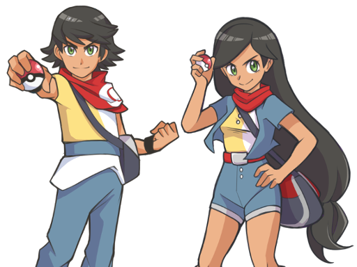
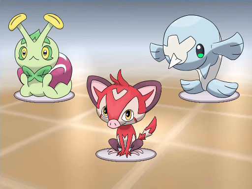
 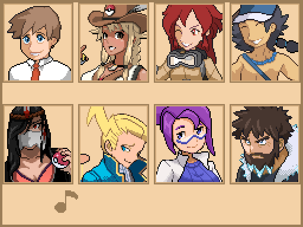
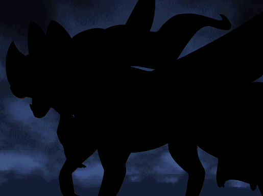
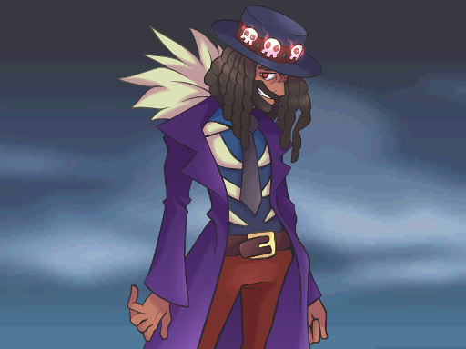
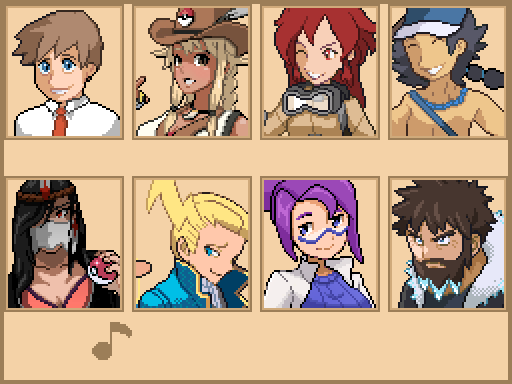
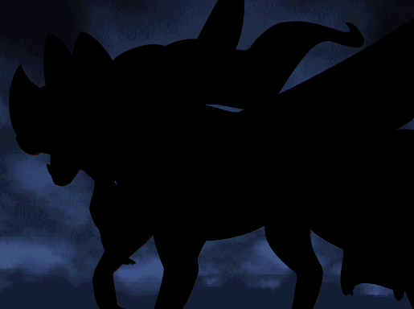
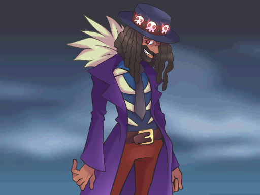
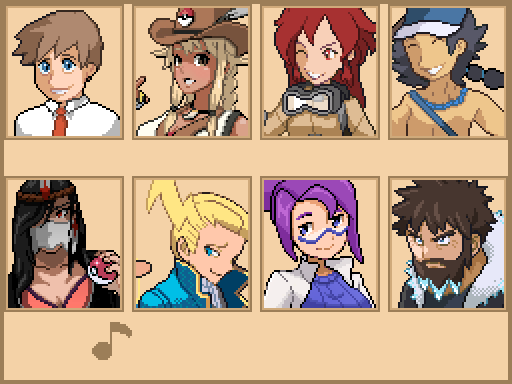
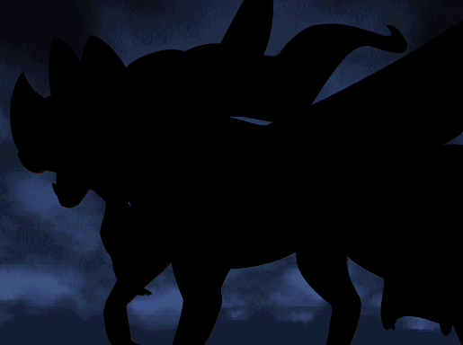
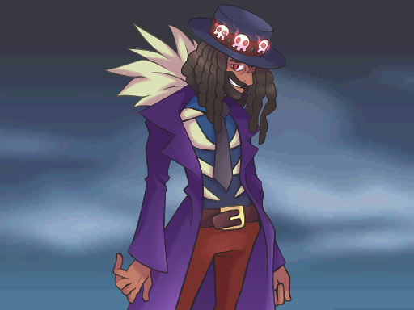